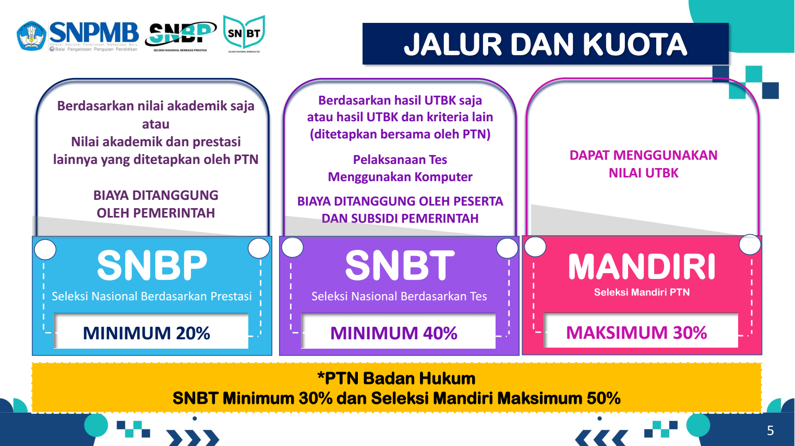
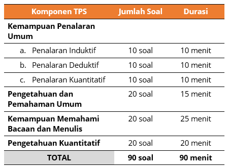
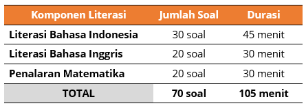
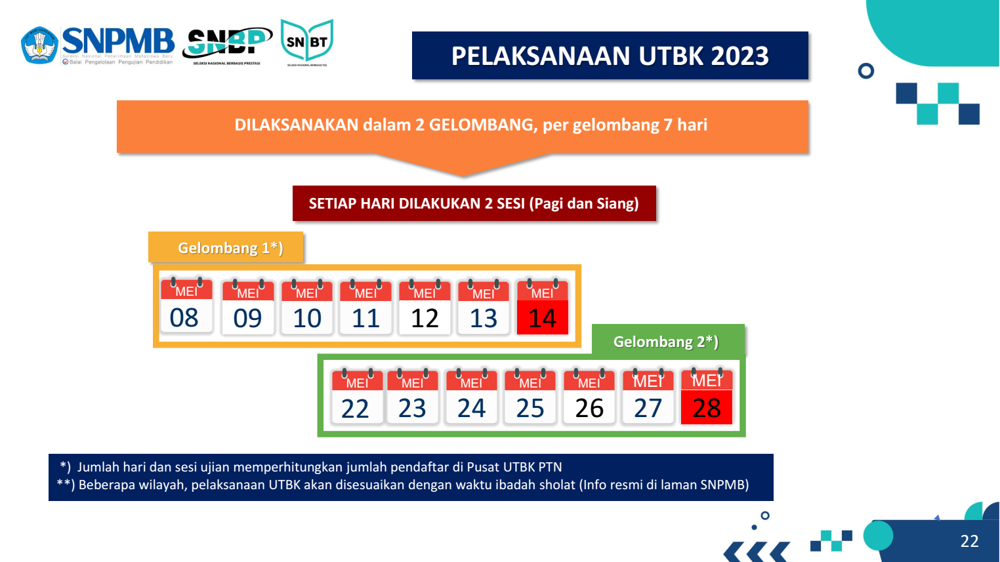
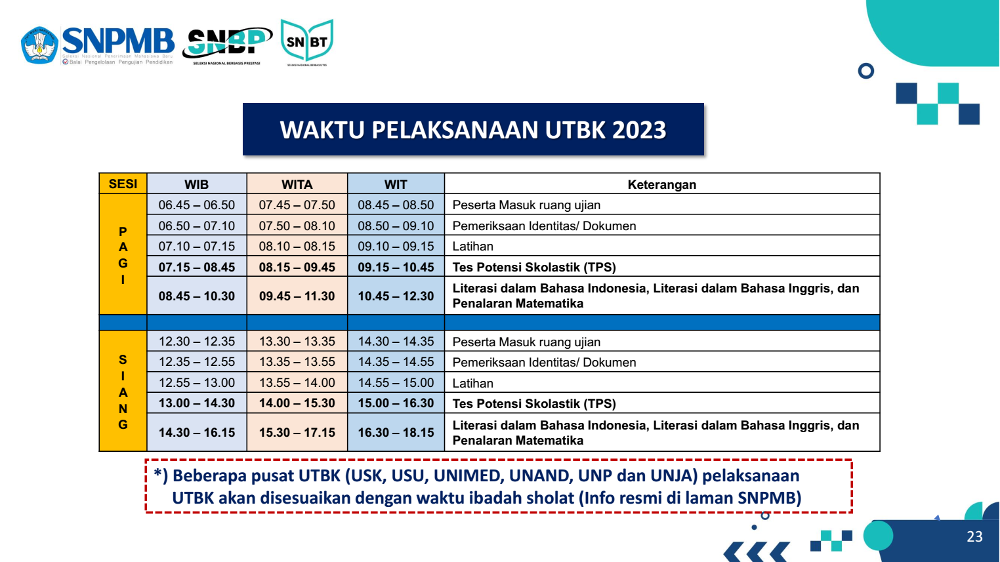

Trainer Public Speaking
Pemateri fasilitator, narasumber, pelatih public speaking hubungi Bpk Hasyim dari Malang Public Speaking School WA : 081-655-3755 untuk keperluan In-House Training Public Speaking bagi perusahaan, instansi, dinas untuk meningkatkan kemampuan SDM dalam berkomunikasi di depan orang banyak.

Agar Menjadi Pribadi yang Lebih Menarik yang Pantas Berezeki Besar. Rezeki Bisa dalam Bentuk 4-TA.
Har-TA:Meningkatnya pendapatkan karena kemampuan berkomunikasi yang lebih baik kepada tim atau pelanggan
Cin-TA:Keluarga yang baik, anak-anak yang soleh dan solihah, teman-teman yang baik dan penuh cinta.
Ka-TA:Bertambahnya kata (ilmu) akan membuat kita jadi orang yang mudah mengerti dan bersyukur
Tah-TA :Kesempatan mendapatkan karir yang lebih baik, naik jabatan atau kesempatan memimpin organisasi
Materi Pelatihan Super LengkapUntuk bisa tampil memukau ketika presentasi, harus dibangun dari 3 materi utama public speaking berikut ini.
-
KONTEN MATERI
Bagaimana meningkatkan kemampuan menyederhanakan materi. Dari yang rumit menjadi lebih simpel sehingga mudah dipahami oleh audien.
-
DESAIN VISUAL
Tampilan visual menyumbang 55% untuk tersampaikan pesan pembicara kepada audien. Berlatih bagaimana membuat slide kelas dunia.
-
CARA MEMBAWAKAN PRESENTASI
Belajar dan berlatih teknik pembukaan, teknik mengalirkan gagasan, dan teknik menutup presentasi yang menarik akan membuat presentasi Anda memukau.
Bimbel Intensif SKB CPNS 2023
Bimbingan Belajar Bimbel SKB CPNS Terbaik WA 08112813141 di Malang, Surabaya, Sidoarjo, Makassar, Denpasar, Bekasi, Jogja, Magelang, Jombang, Banyuwangi, Pasuruan, Probolinggo, Tulungagung, Kediri, Blitar, Nganjuk, Madiun, Ponorogo, Ngawi, Magetan, Mojokerto, Gresik, Lumajang, Jember. Masterprima berpengalaman lebih dari 11 tahun membantu meluluskan ratusan peserta menjadi ASN CPNS dan ASN PPPK.

Masterprima bimbel CPNS, PPPK, dan KEDINASAN meluluskan 98% peserta lulus SKD. Bagi yang optimis lulus perangkingan SKD, pastikan Anda lebih siap dari pesaing. Selangkah lagi akan jadi CPNS.
Sebagai lembaga bimbingan belajar yang profesional, Masterprima kembali membuka kelas SKB khusus Tenaga Kesehatan dengan fasilitas :
- Modul SKB Tenaga Kesehatan
- Tentor dari Tenaga Kesehatan
- Simulasi CBT
Berikut 5 Tips Agar Lulus SKB
-
Seringlah berlatih soal
Supaya terampil menjawab soal-soal SKB, sering-sering berlatih dan berlatih. Karena pengulangan adalah ibu dari segala keterampilan.
-
Baca soal secara teliti
Hal yang harus kita lakukan adalah membaca soal secara teliti dalam mengerjakan soal. Jika kita terburu-buru, kita bisa melewatkan hal penting dari soal dan akhirnya salah memberikan jawaban. Fokus pada soal dan jangan berambisi untuk selesai dengan cepat, yang terpenting adalah ketepatan dan memanfaatkan waktu sebaik-baiknya.
-
Kelola waktu dengan baik
Kita tidak perlu terburu-buru saat mengerjakan soal. Hal yang harus kita lakukan pertama-tama adalah memanajemen waktu dengan baik agar bisa menjawab semua soal SKB.
-
Jawab soal dari yang paling mudah dulu
Mengerjakan soal yang mudah lebih dulu adalah cara agar kita bisa menggunakan waktu semaksimal mungkin. Kita tidak perlu berkutat dengan soal-soal CPNS yang sulit bagi kita saat itu atau membingungkan. Pindah saja dulu ke soal yang dapat kita kerjakan dulu, kemudian nanti kita kembali ke soal yang memiliki kesulitan tinggi
-
Kerjakan soal dengan cepat dan tepat
Kalau kita memilih mengerjakan soal yang mudah dulu meskipun tidak berurutan, kita akan menjadi lebih cepat. Waktu ujian kita terbatas, jadi lebih baik jika mengerjakan soal yang kita bisa kerjakan lebih dulu. Baru nanti ketika ada kesempatan untuk mengoreksi jawaban, kita bisa koreksi.
Agar bisa melakukannya, kita harus sering-sering latihan soal. Kita bisa melakukan simulasi dengan memasang timer saat mengerjakan sebuah soal. Bila kita membutuhkan waktu lama dalam mengerjakan soal, itu berarti kita masih butuh waktu latihan soal agar bisa mengerjakan soal secepat dan seakurat mungkin.
Hal yang perlu kita lakukan adalah rutin belajar bukan belajar satu malam sebelum ujian. Rutin mengerjakan soal akan membuat otak kita ingat dengan persamaan-persamaan dan menghafal banyak istilah serta kosa kata dan itu akan mempermudah kita untuk menjawab soal. Jika diperlukan mengikuti bimbingan belajar SKB CPNS di Masterprima. Nah, semoga tips ini berguna untuk Anda.
Lima Kebijakan Baru Di UTBK - SNBT 2023, Kebijakan Nomor Tiga Membuat Siswa Deg-Degan
Gimana persiapan kamu untuk menghadapi Seleksi Masuk PTN - UTBK di tahun 2023? Mimin doakan semoga kalian dimudahkan dan dilancarkan oleh Tuhan Yang Maha Kuasa ... Aamiin.
Oiya, Sobat eMPe semua ... taukah kamu ada yang baru lho dari seleksi UTBK 2023 nanti? Salah satunya, nama ujian berubah. Kalo tahun 2022 kemarin, namanya Seleksi Bersama Masuk Perguruan Tinggi Negeri (SBMPTN). Tahun 2023 nanti akan berubah menjadi Seleksi Nasional Berbasis Tes (SNBT). Karena nama nya berubah, maka jelaslah bahwa beberapa syarat dan ketentuan seleksi juga mengalami perubahan.
Berikut mimin eMPe akan jelaskan secara lengkap, berdasar Press Release panitia Seleksi Nasional Penerimaan Mahasiswa Baru (SNPMB) pada hari Kamis, 1 Desember 2022. Simak ya...
1. Kuota Mahasiswa Baru Jalur SNBT 2023 Minimum 40%
2. Peserta Wajib Memiliki Akun di SNPMB
Berikut alur pendaftaran UTBK-SNBT sebagai berikut:
- Registrasi Akun SNBT
- Login
- Memilih Menu Verifikasi dan Validasi Data
- Memilih Menu Pendaftaran UTBK-SNBT
- Membayar
- Mencetak Kartu Peserta UTBK-SNBT
Wajib bagi semua calon pendaftar UTBK-SNBT menggunakan NISN, NPSN, dan Tanggal Lahir di halaman https://portal-snpmb.bppp.kemdikbud.go.id.
menggunakan akun SNPMB di https://portal-snpmb.bppp.kemdikbud.go.id.
Mengisi dan melengkapi biodata, unggah pas foto berwarna terbaru, dan verifikasi biodata serta unduh dan unggah pernyataan tuna netra/low vision
Memilih Program Studi, Mengunggah Portofolio, Memilih Pusat UTBK PTN, dan memperoleh Slip Pembayaran Biaya UTBK
Biaya UTBK sebesar Rp200.000,- (dua ratus ribu rupiah)
Biaya yang sudah dibayarkan tidak dapat ditarik kembali dengan alasan apa pun.
Login ke halaman https://portal-snpmb.bppp.kemdikbud.go.id/memilih menu pendaftaran UTBK-SNBT untuk unduh Kartu Peserta UTBK
3. Materi Tes UTBK 2023 Berubah
Ujian Tertulis Berbasis Komputer dalam Seleksi Nasional Penerimaan Mahasiswa Baru (UTBK-SNMPMB) tahun 2023 akan terdiri dari tiga materi ujian yaitu Tes Potensi Skolastik,Tes Literasi dalam Bahasa Indonesia dan Bahasa Inggris, dan Tes Penalaran Matematika.
a. Tes Potensi SkolastikTes Potensi Skolastik (TPS) adalah tes yang didesain untuk menguji kemampuan berfikir siswa sekolah calon mahasiswa baru, yaitu kemampuan untuk memahami dan bernalar yang diperlukan untuk seseorang dapat berhasil dalam pendidikan formal, khususnya pendidikan tinggi. Kemampuan ini berkembang melalui proses belajar dan pengalaman-pengalaman di sekolah maupun di luar sekolah.
TPS terdiri dari empat komponen, ialah Penalaran Umum, Pemahaman Bacaan dan Menulis, Pengetahuan dan Pemahaman Umum, serta Pengetahuan Kuantitatif. Komponen Penalaran Umum terdiri dari tiga sub-komponen, ialah penalaran induktif, penalaran deduktif, dan penalaran kuantitatif.
b. Tes Literasi dalam Bahasa Indonesia dan Bahasa Inggris
Mengukur kemampuan untuk memahami, menggunakan, mengevaluasi, merefleksikan berbagai jenis teks untuk menyelesaikan masalah dan mengembangkan kapasitas individu sebagai warga Indonesia dan warga dunia agar dapat berkontribusi secara produktif kepada masyarakat.
c. Penalaran MatematikaMengukur kemampuan berpikir menggunakan konsep, prosedur, fakta, dan alat matematika untuk menyelesaikan masalah sehari-hari pada berbagai jenis konteks yang relevan untuk individu sebagai warga negara Indonesia dan warga dunia.
4. Tes UTBK Dilaksanakan 2 Gelombang, Peserta Hanya Boleh Ikut 1 Kali.
Jadwal lengkap pelaksanaan UTBK 2023:
- Gelombang 1 : 8 - 14 Mei 2023
- Gelombang 2: 22 - 28 Mei 2023 
- Tes dilakukan 2 sesi dalam 1 hari. 
5. Peserta Boleh Memilih Lintas Jurusan (Merdeka Bertanggung Jawab)
Dalam memilih program studi, setiap peserta diperbolehkan:
- Memilih dua program studi pada satu PTN.
- Memilih masing-masing satu program studi pada dua PTN.